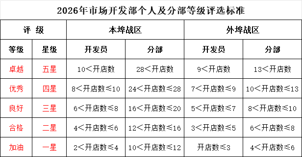

2026年市场开发部开发评级方案1.0
一、方案目的与意义
（一）核心目的
为响应公司战略发展部署，建立以“开店业绩为核心、兼顾团队协作”的评级体系，通过科学量化的评价标准与差异化激励措施，精准衡量开发员及各开发分部的工作成效，充分激发团队内生动力，推动部门2026年度拓店任务高质量完成。
（二）核心意义
1.明确价值导向：以开店数为核心评级指标，引导开发员及各分部将工作重心聚焦于高效拓店与优质加盟商开发。
2.激发个体与团队活力：通过分级分类的评级规则与阶梯式激励，打破“平均主义”，以奋斗者为本，同时促进分部内部协作与战区间良性竞争。
3.优化人才管理：以评级结果为依据，精准识别优秀开发人才与高效管理团队，为人才晋升、培训赋能提供数据支撑。
二、评级范围与周期
（一）评级范围
本方案覆盖市场开发部全体在职开发员，以及按战区划分的所有开发分部。
（二）评级周期
年度评级，以全年开店业绩为核心依据，结合年度综合表现，确定最终评级结果，作为年度评优、晋升、奖金核算的核心参考。
三、评级核心依据与标准
评级以“开店数”为核心量化指标，同时兼顾加盟门店质量（如加盟方资质、门店选址等级、签约年限等）与团队协作表现，具体评级方式严格参照以下规则执行：

（一）核心指标定义
本方案所指“开店数”，为经公司审核确认的“正式开业加盟门店数”，需满足以下条件：加盟合同已签署、进度会已开、门店完成装修验收、设备及首批商品已上架、通过公司开业审核并正式营业。未达上述标准的意向门店、筹备中门店不计入统计。
（二）评级标准
根据开店数区间，分别评级为：卓越（五星）、优秀（四星）、良好（三星）、合格（二星）、加油（一星）。
四、评级流程与执行细则
（一）组织架构
成立“评级工作小组”，由部门负责人担任组长，各战区主管为成员，负责评级规则解读、数据统计、结果审核、异议处理等工作。
（二）执行流程
1.数据统计阶段：次年1月5日前，各战区主管需将本分部及下属开发员的当年开店数据（含门店名称、开业时间、加盟方信息、门店等级等）报送至部门文员处，文员汇总后交于部门负责人，多重确认确保数据真实准确。
2.评选阶段：次年1月10日前，工作小组根据评级标准，完成开发员及分部的初评打分与等级划分，将结果反馈至各分部及开发员本人。
4.公示阶段：次年1月12日前，工作小组发布终评结果，在部门内部公示3个工作日，公示无异议后正式生效。
五、评级结果激励
评级结果与开发员及分部的激励、发展直接挂钩，实行“正向激励为主、反向约束为辅”的原则，具体应用如下：
（一）开发员激励与约束
1.年度激励：年度卓越级、优秀级开发员可获部门年度相关荣誉称号、奖牌及专项奖励，优先参与公司年度评优。
2.职业发展：年度卓越级开发员纳入“部门核心人才库”，优先获得晋升机会（如晋升分部主管、战区经理助理等）；优先参与公司组织的外部行业交流、高端培训等资源倾斜。
3.约束措施：年度评级为加油级的开发员，由战区主管和部门负责人进行绩效面谈，制定绩效改进计划。
（二）开发分部激励与约束
1.年度激励：年度卓越分部获部门年度相关荣誉称号及专项奖励，优先参与公司年度评优。
2.资源倾斜：年度卓越级、优秀级分部，优先获得优质铺源信息、公司品牌推广资源支持；外埠优秀分部可优先拓展新的区域市场的。
3.约束措施：年度评级为合格级、加油级的开发分部，由战区主管牵头复盘，需向部门提交整改报告。
六、保障措施
（一）规则透明化
本方案正式发布后，组织全体开发员及分部负责人开展专项宣导会，详细解读评级标准、流程、激励规则等内容，确保每位员工清晰理解；方案内容及后续调整需在部门微信群公示，保障规则透明。
（二）过程支持化
针对评级靠后的开发员及分部，部门需提供针对性支持：为开发员匹配资深导师进行一对一指导，协助优化拓店策略；为分部组织专题复盘会，分析问题并协调资源解决拓店难点，避免只评不帮。
七、附则
1.本方案自2026年1月1日起正式实施，试行三个月，到期如无调整则继续延用。
2.如遇市场环境重大变化（如行业政策调整、区域经济波动等），评级工作小组可结合实际情况，对评级标准、调节系数等进行合理调整，调整方案需总经办审批后公示执行。
市场开发部
2025年12月05日